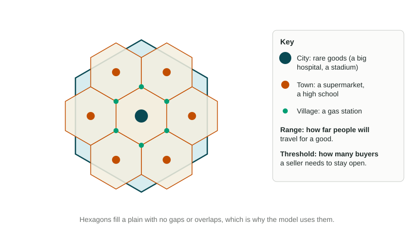

The Size and Distribution of Cities
The rank-size rule predicts a smooth ladder of city sizes; a primate city breaks it, usually because a capital or colonial port gathered power and money.
Part 1 · Hook
Why this matters
Part 2 · Before you start
What this builds on
Part 3 · Prerequisite check
Quick check before you start
1. What does the urban hierarchy rank?
- Cities by the size of the area they serve and control
- Cities by their age
- Countries by their land area
- Neighborhoods by income
Show the answer
Higher levels serve and control larger areas.
- Correct: Cities by the size of the area they serve and control:
- Cities by their age:
- Countries by their land area:
- Neighborhoods by income:
2. Two towns are the same size. Which is likely to trade more with a big city 50 km away than with one 500 km away?
- Both trade more with the nearer city, because of distance decay
- Both trade more with the farther city
- Distance makes no difference to trade
- Only the larger town trades at all
Show the answer
Distance decay: interaction falls as distance grows.
- Correct: Both trade more with the nearer city, because of distance decay:
- Both trade more with the farther city:
- Distance makes no difference to trade:
- Only the larger town trades at all:
Part 4 · See it
See it first

Part 5 · Step by step
How it works, step by step
- A shop needs enough buyers to cover its costs (its threshold)it can only open where enough people live within reach
- People travel farther for rare, costly goods than for everyday ones (range)high-order goods gather in a few large places; low-order goods are sold in many small ones
- Places at each level space themselves to share the marketa pattern of a few large central places and many small ones forms, a hierarchy of market areas
- One city holds the capital, the main port and most investmentit grows far larger than the next city and becomes a primate city, breaking the rank-size pattern
Part 6 · Key ideas
Key ideas
- The rank-size rule: the city of rank n has about 1/n the population of the largest city. A primate city is a largest city far bigger than the second (often more than twice as big) that dominates its country.
- The gravity model: interaction between two places rises with their populations and falls with the square of the distance between them: .
- Central place theory (Christaller, 1933): settlements are market centers. Threshold is the fewest buyers a seller needs; range is how far people will travel for a good. Market areas are drawn as hexagons.
- Each is a model with assumptions: a flat, even plain, equal travel in every direction, shoppers going to the nearest place. Real borders, landforms, cars and online shopping bend them.
Part 7 · Misconception
A common mistake
The wrong idea: Range and threshold mean the same thing: how many people a place serves.
What actually happens: Threshold is a number of people (the fewest buyers a seller needs to stay open). Range is a distance (how far buyers will travel for the good). A heart surgery center has a high threshold and a long range; a gas station has a low threshold and a short range.
Part 8 · Check yourself
Check yourself
Exam-style questions. Anything you miss goes into your review queue.
Data
The five largest cities in two countries
| Rank | Country X | Country Y |
|---|---|---|
| 1 | 8.0 | 9.0 |
| 2 | 4.1 | 1.1 |
| 3 | 2.6 | 0.9 |
| 4 | 2.0 | 0.8 |
| 5 | 1.6 | 0.6 |
Invented data for practice.
1. Using the rank-size rule and Country X's largest city, how many million people would the rule expect in Country X's 4th-ranked city?
Type a number. No calculator needed: work it out by hand, as on the exam.
Show the answer
Expected population = largest / rank = million. Country X's 4th city has 2.0 million, a close fit.
- Answer: 2
2. Which country's data show a primate city?
- Country X
- Country Y
- Both countries equally
- Neither country
Show the answer
In Country Y the largest city (9.0 million) is about eight times the second (1.1 million). In Country X it is about twice the second, close to the rank-size rule.
- Country X: Country X's cities fall in a smooth ladder close to the rank-size rule.
- Correct: Country Y: Right: one city far larger than the rest is a primate city.
- Both countries equally: The two countries differ sharply in how their cities compare.
- Neither country: Country Y's first city is about eight times its second.
3. Country Y was a colony until 1960, ruled from the port that is its largest city. Which best explains Country Y's pattern?
- Power, trade and investment gathered in the old colonial port
- Its people spread evenly across a flat plain
- Its smaller cities grew faster than its largest city
- Its border cuts its largest city off from trade
Show the answer
The colonial government built offices, the railroad terminus and trading houses in one port. After independence it stayed the capital and kept drawing migrants and money, so it grew far larger than any other city.
- Correct: Power, trade and investment gathered in the old colonial port: Right: history concentrated power and money in one city.
- Its people spread evenly across a flat plain: An even spread over a plain fits central place theory, not one giant city.
- Its smaller cities grew faster than its largest city: If smaller cities grew faster, the gap would shrink, not stay wide.
- Its border cuts its largest city off from trade: A cut-off city would grow slowly; this one dominates.
4. A new bookstore needs at least 5,000 regular customers to pay its rent. In central place theory, what is that number?
- Its range
- Its rank
- Its threshold
- Its market area
Show the answer
Threshold is the fewest customers a seller needs to stay open.
- Its range: Range is a distance people will travel, not a number of customers.
- Its rank: Rank is a city's place in a size order.
- Correct: Its threshold: Right: the minimum number of buyers is the threshold.
- Its market area: The market area is the land around a place that it serves.
5. People drive up to 150 km to see a play at a city's large theater, but only 5 km to buy bread. What does this show about the theater?
- It sells a good with a low threshold
- It sells a good with a long range
- It is a low-order service
- It is found in most villages, close to homes
Show the answer
Range is how far people will travel for a good. A long trip for a play means a long range, a sign of a high-order service.
- It sells a good with a low threshold: A big theater needs many buyers: a high threshold, not a low one.
- Correct: It sells a good with a long range: Right: 150 km is a long range.
- It is a low-order service: Long range and a high threshold make it a high-order service.
- It is found in most villages, close to homes: High-order services sit in a few large places, not in villages.
6. In central place theory, why are large cities fewer and farther apart than villages?
- High-order goods need large market areas
- Villages are built on better farmland, so they crowd close together
- Large cities need to be built far from rivers and their floods
- Governments set the distance between towns and cities by law
Show the answer
High-order goods have high thresholds and long ranges. Each large place needs a big market area, so they space out widely; low-order places with small market areas sit close together.
- Correct: High-order goods need large market areas: Right: thresholds and ranges set the spacing.
- Villages are built on better farmland, so they crowd close together: The model assumes an even plain, so farmland quality does not explain it.
- Large cities need to be built far from rivers and their floods: The model assumes a flat plain with no rivers.
- Governments set the distance between towns and cities by law: The model explains spacing by markets, not laws.
Part 9 · Summary
Summary
Part 10 · Up next
What comes next
Part 11 · Connections